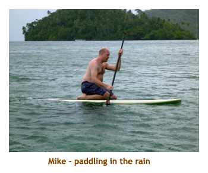

[ Home ] [ Travel ] [ Photography ] [ Pets ] [ Games] [ Rowing] [ Physics ]


Cruising on the Oceania Marina
Travel
Cruises
Past Cruises (Diaries)
Future Cruises
Rogues Galleries
Land Trips
Diaries (Land Trips)
Hawai'i - Big Island - 04'01
Hawai'i - Maui - 05'02
Hawai'i - Big Island - 04'03
Hawai'i - Kaua'i - 09'04
Hawai'i - Big Island - 04'06
Hawai'i - Maui - 04'06
Mainland China - 05'07
Phoenix, Arizona - 12'07
Greek Isles - 05'08
Hawai'i - Kaua'i - 09'08
Hawai'i - Big Island - 09'09
Hawai'i - Maui - 05'12
Hawai'i - Big Island - 04'13
Ireland - 08'13
Mexico - Cancun 11'13
France/Belgium/Lux 07'15
Hawai'i - Big Island - 05'17
England / Wales - 06'17
Hawai'i - Big Island - 09'19
Photography
Cameras
Underwater
Pets
Tara
Blackie
Whitey
Muffy
Ollie
Rusty
Fluffy
Rufus&Dufus
Games
Rowing
Physics
Rating (out of 5): Ship  Food
Service
Itinerary
Food
Service
Itinerary
We booked this 11 day cruise as an extension of the 20 day Easter Island cruise with the hopes that the kids could join us on this one. Mike and Stacy were able to fit it into their schedule, but Chrissy and Matt could not get the holiday time. There were about 1211 people on the cruise, essentially full. It was a younger crowd than the previous leg, probably because of the opportunities for hiking, diving and snorkeling. There were 70 of us who carried over from the Easter Island cruise.
The weather was not the best. After a lot of sunshine on the previous cruise, we were hopeful of continued blue skies. However, being the rainy season the weather turned cloudy with lots of heavy rainstorms. We were fortunate to be doing mostly snorkeling excursions as the rain doesn't have a great impact. I felt sorry for those doing island tours in the heavy mists and muddy roads.
I think I'd mentioned before that the passengers get one "guaranteed" reservation for each of the four specialty restaurants, and it was a free for all after that. With the previous cruise and 1200 passengers being spread over 20 days, it was no problem getting into the specialty restaurants on any night. However, with 1200 people spread over 11 days, it was quite different. We ended up getting 3 extra reservations (7 in total) but the other nights were all booked up. That was fine though as the main dining room (MDR) was very good also.
Because we spent a lot of our excursion time in boats or in the water, and due to the fact
that is was always cloudy or rainy on land, most of the pictures we took were
of fish. To keep this diary to a reasonable size, I have put most of the fish pictures on a separate page.
*** If you wish to see more fish pictures click here
==> More Fish
***
Note: This was a special cruise for me as it was my 50th cruise. Marjorie is
at 49 because Mike and I did a Galapagos Islands cruise putting me one up on Marjorie.
I'm sure she will catch up soon!
Day 1 (Jan 16) - A day in Papeete
We went to the Red Ginger for dinner (without reservations) as the previous cruisers were now gone and very few of the new folks had boarded yet. The specialty restaurants were empty! I had rack of lamb. It was raining in the evening, so we sat on our balcony and read our books. We wandered the ship a bit too, as we were waiting for M&S to arrive from their evening flight. The kids finally arrived at the ship about 11:00 PM. Check-in was handled in the theatre. After they had been processed we visited with them for a bit, but then it was time for bed. We had drifted off to sleep when the new folk's luggage was being delivered. The baggage tag had ripped off of Mike's suitcase so I guess they had to look up his room from a name tag for delivery. Guess which "Cousins" they found! So, the luggage guys pounded on our cabin door at 1:00 AM and I had to get dressed and carry Mike's bag up to his room.
Day 2 (Jan 17) - Back to Moorea
Day 3 (Jan 18) - Braving the rain in Huahine
 It took us about 10 minutes to walk there and our guide Annie came running out to meet us. It turned out she had emailed us the day before to cancel the tour because of the bad weather forecast. However, because we showed up anyway, she took us out. Our first stop was at a stingray area, but we only saw one stingray and an eagle ray so didn't go in. Then she took us to another area for snorkeling in coral. It was really raining at this time. The snorkel was good anyway. Then we went to a sheltered area to try paddle boarding. Mike and I were willing to give it a try and it was quite fun. After paddling around on my knees for a while, I even made it to standing up (for a few seconds). Our tour had taken us almost back to the ship in Maroe Bay. Annie gave us the option of going back to Fare to shop the village (and taking the shuttle back), or be dropped off at the ship. We opted for the ship. We were back onboard about 3:00. We read and then played trivia. We had dinner at the Red Ginger (M&S first time - they loved it). I had beef teriyaki. We played evening trivia and then went to bed.
Day 4 (Jan 19) - Our first time to Raiatea
After our snorkel, we sailed partway around the island and docked at a pearl farm. Our guide explained the process of pearl farming and then we had time to wander around (and shop). Then we reboarded the boat and headed to a motu where they had lunch set up for us. It was very good and included drinks. Fully fed, we then headed to a vanilla farm and were given a tour / lecture by the owner. It was very interesting. Our final stop was at a turtle rehab place where we saw one of the younger green sea turtles. We were back to the ship by 4:00. We lounged around until dinner time. We lucked out and managed to score a table in Red Ginger for dinner. I had beef penyang. We played evening trivia and actually won. Woohoo. We skipped the entertainment and went to bed.
Day 5 (Jan 20) - Bora Bora Part I
 Another early morning, up at 7:00 AM. There was no rush today as our snorkel tour
wasn't until the afternoon. We had breakfast as the ship anchored at Bora
Bora, just off the village of Vaitape. We were here just a week ago for two
days. Now we were back for another two days. It was cloudy and rainy - what's
new? We played min-golf, shuffleboard and wandered the ship for the morning.
We had an early lunch at the buffet and then tendered over to Vaitape for
our 12:45 tour. Being mid-day, we didn't have any wait for the tender. Marjorie
didn't come with us so there were just 5 of us in a small speedboat. Our first
stop was at the stingray and shark area (I recognized some of them from last
time). Then we motored a ways around the island and stopped at the famous
Bloody Mary's restaurant and bar. This bar was built on the popularity
of the musical South Pacific which was partially filmed in Bora Bora.
Another early morning, up at 7:00 AM. There was no rush today as our snorkel tour
wasn't until the afternoon. We had breakfast as the ship anchored at Bora
Bora, just off the village of Vaitape. We were here just a week ago for two
days. Now we were back for another two days. It was cloudy and rainy - what's
new? We played min-golf, shuffleboard and wandered the ship for the morning.
We had an early lunch at the buffet and then tendered over to Vaitape for
our 12:45 tour. Being mid-day, we didn't have any wait for the tender. Marjorie
didn't come with us so there were just 5 of us in a small speedboat. Our first
stop was at the stingray and shark area (I recognized some of them from last
time). Then we motored a ways around the island and stopped at the famous
Bloody Mary's restaurant and bar. This bar was built on the popularity
of the musical South Pacific which was partially filmed in Bora Bora.
We had time to check out the bar. In the entrance way was a who's who of all the rich and famous who had visited the bar. The floor of the bar itself was fine white sand. There was a wall where people had attached signed dollar bills. Then it was back in the boat heading for the coral gardens. I think the #1 snorkeling area was too rough, so we were taken to the #2 spot. We had a great snorkel there, lots of fish and coral. Afterwards we motored to a small motu (island) that had the home of the tour company's owner. We wandered the grounds of the small island. Lovely! Finally we continued our circumnavigation of the island and returned to Vaitape. We were back on the ship by 5:00 PM. We had dinner in the MDR where I had sea scallops. We played evening trivia and then packed it in for the night.
Day 6 (Jan 21) - Bora Bora Part II
Day 7 (Jan 22) - At sea
Day 8, 9 (Jan 23, 24) - Two days in Nuku Hiva
The second day was cloudy and hot. We decided not to tender to the island as we had already seen the town. So, we spent a "day at anchor". We were up at 7:30 again and did the gym. We had breakfast and then did the mini-golf and shuffleboard tournaments. At 11:30 we met the kids in the games room and played some Dominion. We had a later lunch (milkshake and surf & turf burger) at 1:30. Then it was outside for some more shuffleboard. Trivia was at 4:30 and we were supposed to sail at 6:00. I was watching the last tender coming to the ship from our balcony and it was 6:00 exactly - the last tender was supposed to be at 5:30. This one let out a few people and then headed back to the town. It returned 10 minutes later with one lady . I never did hear why she was late. So, we sailed at 6:30. We were back to Jacques for dinner and I did not have scallops! No, I had lobster thermidor instead. It was excellent. We played evening trivia, put our clocks back half an hour and then went to bed.
Day 10, 11 (Jan 25, 26) - A day at sea, then Rangiroa
The following day was our final port - Rangiroa. Like Fakarava, Rangiroa is a coral atoll.
That is, a chain of motus (sand bar islands) surrounding a central lagoon. Gorgeous! We
were up at 6:30AM to watch us anchor in the lagoon at 7:00. It was very cloudy, but warm.
We had breakfast , packed our snorkel bags and tendered over to the dock by 8:30. Our
tour consisted of 2 boats of 12 people and was a full day of visiting interesting places around
the islands. The highlight was to be a snorkel in the "aquarium", which was a coral area not
too far from our ship.
The operator had emailed us the day before (shades of Huahine) that he was cancelling the excursion because of the predicted bad weather. I guess nobody had read their email as we were all taken by surprise. I asked the operator if he could just take us to the aquarium for a couple of hours. He agreed (as did all the others on the dock) and set up 2-hour time slots throughout the day for the crowd to visit the amazing snorkel spot. And he agreed to charge only $25 per person! By this time others on the dock who hadn't pre-booked wanted to join in too so there were lots of people to fill the boats. We got the early slot and so were taken out right away. When we jumped in the water we were greeted by masses of fish. It was awesome, probably the most fish (and variety) I have ever snorkeled with. We returned to the tender dock and were back on board by 12:00. We had lunch and then played Sticks with the kids. At 4:00 it was the final trivia followed by the "end of the cruise; cash in your BIG-O Points" extravaganza. We had saved our points from the first leg of the cruise, and from trivia, shuffleboard and min-golf tournies so we had about 130 points. We cashed in 30 for a T-shirt and gave the rest to the kids. Then we read a bit and started packing our bags. We received a note in our room that the Air Tahiti plane had had a bird strike and so a new plane was coming but would be late (tomorrow). We would therefore be flying out at 2:30 AM!! Yuch! We had our final dinner in Toscana and really enjoyed it. I had veal picatta. We walked around the ship in the evening and then headed off to bed.
*** If you wish to see more fish pictures click here
==> More Fish
***
Day 12 (Jan 27) - Papeete and the trip home
 We were up at 7:00 to have breakfast and do our final packing. I had mentioned
in the previous diary that there were some very unique times for embark/debark
due to the late arrival of the chartered flights. So, we didn't need to have
our bags out until 9:30 AM, we could use our cabin up to 12:00 noon and we
could stay onboard until 5:00 PM. Then we would be transferred to a hotel area
until 9:00 or so and then taken to the airport. Unfortunately, M&S had a
different flight than us, so were booked for a different hotel as well. We
headed into town to use the internet and then had lunch at the buffet. We
vacated our room and spent the afternoon playing Dominion and then wandering
around the ship. At 4:30 we were picked up by bus and taken to our respective
hotels.
We were up at 7:00 to have breakfast and do our final packing. I had mentioned
in the previous diary that there were some very unique times for embark/debark
due to the late arrival of the chartered flights. So, we didn't need to have
our bags out until 9:30 AM, we could use our cabin up to 12:00 noon and we
could stay onboard until 5:00 PM. Then we would be transferred to a hotel area
until 9:00 or so and then taken to the airport. Unfortunately, M&S had a
different flight than us, so were booked for a different hotel as well. We
headed into town to use the internet and then had lunch at the buffet. We
vacated our room and spent the afternoon playing Dominion and then wandering
around the ship. At 4:30 we were picked up by bus and taken to our respective
hotels.
We were at Le Meridien Tahiti. Our busload was deposited in a large conference room with some juices and soda for nurishment. We played some Sticks with Dan & Sue and then wandered around the pool and over-water bungalows in the evening sun. It was so peaceful! A room steward let us look though one on the bungalows. Then finally we were bused to the airport for our Air Tahiti flight to LAX. M&S had a delay on their Atlas flight (B-747) while our flight (A340) left an hour early so we landed at LAX about the same time. From there, Marjorie and I flew direct to Calgary while M&S flew through Seattle. Once again we landed in Calgary about the same time. Which was fortunate because our car battery was dead in the parking lot (1:00 AM, -18 degrees) and Stacy's Mom (picking them up) had to give us a boost. We were home by 1:30 AM to see the kitties and head off to our own bed. All in all a wonderful 31 days!